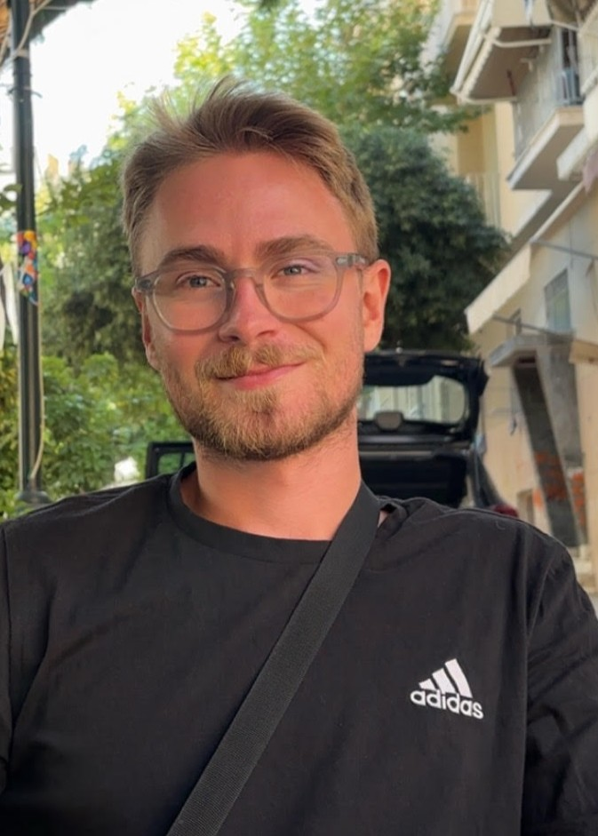

SEBASTIAN
PERSSON
UX & Service Designer focused on translating complex user needs into measurable business value. With experience from projects in collaboration with Trafikverket and Region Halland. I am driven by creating inclusive digital services through data-driven analysis and prototyping.

05+
Years of Academic Experience
Combining design thinking and service design principles to solve complex problems and structural challenges.
100%
Focus on societal impact
Experience from designing processes and services for complex public sectors such as Trafikverket and Region Halland.
A-B
From insight to impact
Bridging the gap between complex ideas and tangible solutions.
CASE STUDIES

Region Halland - Ambulansbemmaningen
Optimizing critical care logistics through a high-density mobile interface that balances rigid medical compliance with frictionless, real-time schedule orchestration.
LBVA & VIVAB
Translating industrial data into corporate climate action through a dual-platform service infrastructure that transforms abstract water metrics into an intuitive, 3D-visualized B2B resource strategy.